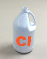

|
|
........Literatura>>>Los riesgos en el uso de cloro en desinfección de agua
 |
Cada año, casi 1,500 millones de personas padecen de enfermedades evitables propagadas por el agua, tales como cólera, fiebre tifoidea, disentería, giardiasis, esqistosomiasis y hepatitis A. La Organización Mundial de la Salud (OMS) calcula que más de nueve millones de personas mueren cada año a través del mundo a causa de agua contaminada. Eso equivale a 25,000 personas por día, muchas de las cuales son niños menores de cinco años de edad. |
La Organización de las Naciones Unidas proyecta que para el año 2025, más de dos tercios de la población global vivirán en países con serios problemas de carencia de suministros de agua limpia.
Los aumentos de población, y sus impactos, continúan ejerciendo una gran presión sobre los recursos de agua alrededor del mundo. Al mismo tiempo, el aumento de residuos municipales y agrícolas, aguas de desagüe y productos derivados de la industria, además de los efectos climáticos globales y desequilibrios ecológicos, comprometen aún más la calidad del agua.
La cloración y los PDDs
A principios de los años 1900, se inició la cloración de los suministros de agua potable en las naciones desarrolladas, seguida por una reducción drástica en las epidemias de enfermedades bacterianas, eliminando virtualmente la tifoidea y el cólera. Sin embargo, en los países en vías de desarrollo, estas enfermedades propagadas a través del agua siguen creando problemas sanitarios y de salud.
Además de proveer protección contra los patógenos virales y bacterianos, los desinfectantes a base de cloro también mejoran la estética del agua, que puede ser deteriorada por algas y materia orgánica en descomposición causando cambios en su color, sabor, y olor. El cloro evita que las bacterias se reproduzcan agregando un nivel residual de desinfectante en el sistema de distribución. En muchas áreas, tanto de los países desarrollados como de países en vías de desarrollo, los sistemas de distribución de agua potable no han sido reemplazados o vueltos a revestir, lo cual hace que frecuentemente tengan óxido, escamas, presenten formación de biopelículas, fugas y grietas que pueden llevar a eventos de recontaminación comprometiendo la calidad del agua. Esta es la razón por la que es importante contar con cierto nivel de desinfectante residual.
A pesar de que el cloro presenta muchos beneficios para la salud pública y el tratamiento del agua, estudios recientes indican que también puede existir una relación causal entre la desinfección del agua con cloro y la salud reproductora o fetal. Otros estudios han indicado que el consumo de agua tratada con cloro puede traer consigo efectos negativos a largo plazo, como el cáncer.
El problema surge cuando se añade cloro al agua de origen que contiene materias orgánicas naturales (MONs), tales como los ácidos húmico y fúlvico de plantas podridas, u otros residuos orgánicos. En el medio ambiente del agua, el cloro reacciona con los agentes orgánicos para formar productos derivados, como los Trihalometanos o THMs. Los principales THMs que causan preocupación son:
1) Cloroformo (CHCl3),
2) Bromoformo (CHBr3),
3) Bromodiclorometano (CHCl2Br), y
4) Clorodibromometano (CHCLBr2).
Colectivamente, estos compuestos son conocidos como THMs totales (THMTs). Otros grupos principales de PDDs incluyen los ácidos haloacíticos y los haloacetonitrilos.
Evidencia de riesgo
Las principales preocupaciones que existen sobre los PDDs incluyen:
1) Daño en las funciones reproductoras, es decir, disminución en la fertilidad, malparto,
2) Lesión en el desarrollo fetal dentro del útero y después del parto, y
3) Desarrollo de cáncer.
Durante la última década, se llevaron a cabo numerosos estudios para evaluar la toxicidad de los PDDs. Estos estudios incluyeron tanto a sujetos humanos como animales. En 1998, la noción percibida era que la exposición al agua clorada no podía ser definitivamente ligada a efectos adversos en la reproducción o el desarrollo fetal, a los niveles recomendados para el agua distribuida. Las agencias de salud estadounidenses, incluyendo a la Sociedad Americana para Microbiología (ASM) y la Agencia de Protección del Medio Ambiente de los EE.UU. (USEPA), apoyaron esta conclusión. Estudios más recientes han mostrado asociaciones moderadas entre los PDDs y un peso bajo de nacimiento, defectos del tubo neural y abortos espontáneos.
En cuatro estudios realizados en Iowa, Norte de Nueva Jersey, Denver y Nueva Escocia, se mostró una leve asociación entre los PDDs y un peso bajo de nacimiento (pequeño para la edad gestativa, mientras dos de los estudios (Nueva Jersey y Nueva Escocia) indicaron una asociación con los defectos del tubo neural y defectos de fisuras. Dos estudios más (Norte de Nueva Jersey y Nueva Jersey) estuvieron en conflicto con respecto a una asociación con efectos cardíacos, mientras que otro mostró una asociación con el aborto espontáneo (California). Con respecto a la muerte fetal, no pudo hacerse ninguna correlación consistente (Norte de Nueva Jersey y Nueva Escocia).
Se espera que la continuación de los estudios defina de manera más definitiva los niveles de exposición y los resultados asociados con la salud por la exposición a PDDs. Además, aún existen preguntas con respecto a los efectos tóxicos de la exposición a múltiples PDDs a través del tiempo. Mientras continúa la investigación, las agencias de salud están tomando un enfoque proactivo sugiriendo niveles seguros de ingestión para varios PDDs. Por ejemplo, la USEPA recientemente redujo el Nivel Máximo Contaminante de los THMTs de 100 partes por billón (ppb) a 80 ppb. La Organización Mundial de la Salud (OMS) examina la evidencia para riesgos tóxicos de los PDDs y recomienda tasas aceptables de ingestión diaria para varios de estos.
Los oficiales de salud pública advierten que los riesgos a la salud de los THMs son pequeños comparados con los riesgos asociados con las enfermedades propagadas a través del agua. De tal manera que es importante continuar con el proceso de desinfección, a menos que éste pueda ser sustituido por una alternativa efectiva para asegurar un suministro de agua más seguro. Tomemos en cuenta la situación en Perú en 1991, donde los procesos de cloración fueron detenidos en parte debido a la preocupación con respecto a los efectos potenciales a la salud de los THMs. El resultado de esto fue el primer brote de cólera en la región desde principios del siglo, el cual duró cinco años. La epidemia de cólera en Latinoamérica ocasionó más de 1 millón de casos y 13,000 muertes. En los países desarrollados, el agua que contiene más de 80 ppb de THMTs es considerada inaceptable para consumo. Sin embargo, los suministros alternos pueden no estar accesibles.
|
|
|
(a) Bacteria del cólera |
(b) Salmonella entérica |
(c) Shigella |
|
|
|
(d) Campylo bacteria histolytica |
(e) Vibrio Cholerae |
(f) Entamoeba |
Tratamientos alternos
A pesar de que el desinfectante ideal aún no se ha creado, la desinfección con cloro es actualmente la tecnología de desinfección disponible más ampliamente utilizada, más práctica y efectiva para el tratamiento del agua. Continúan los debates acerca de los efectos potenciales a la salud por exposición al cloro a lo largo del tiempo. La aplicación de esta tecnología al tratamiento de agua ha salvado un sin número de vidas que de otra manera hubieran sido perdidas a las enfermedades infecciosas. Además, las consecuencias de las infecciones microbianas pueden extenderse más allá de las enfermedades diarreicas y pueden incluir condiciones crónicas, tales como la deficiencia renal, daño cerebral, artritis y otras enfermedades de naturaleza autoinmune, enfermedad del corazón, cáncer estomacal, diabetes, crecimiento impedido y desarrollo intelectual deficiente.
Los THMs son altamente volátiles y fácilmente eliminados del agua terminada a través de la filtración con carbón activado, destilación, o hirviendo el agua. De no existir un medio de desinfección, el agua potable puede ser hervida por 2-3 minutos para eliminar los patógenos entéricos. A pesar de ser un método efectivo contra la mayoría de patógenos microbianos, hervir el agua no es el medio más eficiente de tratamiento de agua, pues requiere tiempo y una gran cantidad de energía. Además, hervir el agua puede resultar en la concentración, en lugar de la eliminación, de algunos contaminantes como los herbicidas, pesticidas y otros compuestos orgánicos volátiles (COVs). Los dispositivos de punto de uso (PDU) ofrecen un medio para la eliminación rutinaria de bacterias patogénicas y otros contaminantes dañinos presentes en el agua potable, como sustancias químicas y productos derivados de los desinfectantes. Una variedad de sistemas de PDU que utilizan ósmosis inversa, destilación, desinfección, filtración, y otros métodos de purificación, tienen la capacidad de eliminar los patógenos. Los tratamientos de desinfección (ozono, cloro, UV, etc.) proveen protección adicional.
Por esta razón, es necesario llevar a cabo estudios adicionales para especificar los riesgos a la salud humana que presentan los trihalometanos y otros productos relacionados con la desinfección por cloro. Sin embargo, se ha demostrado que la desinfección de fuentes de agua potable utilizando cloro, fue el factor principal para reducir el número de muertes y enfermedades en los seres humanos a causa de patógenos propagados a través del agua, durante el siglo XX. Hoy en día, se encuentran disponibles más que nunca, métodos de tratamiento con los cuales, tanto los PDDs como sus precursores orgánicos, pueden ser eliminados del agua. De esta forma, NeoCorp Water recomienda un sistema de purificación para eliminar tanto los contaminantes orgánicos como inorgánicos del agua que usted toma, incluyendo el cloro…
Bibliografía
- Desinfección con Cloro y Riesgos de los Productos Derivados de la Desinfección. Reynolds, A. Kelly., Volumen 2 - Número 4, 1 de Julio de 2002, Paginas 1-4
Podemos enviar cualquier equipo a cualquier parte del mundo, por el medio que usted elija: DHL, Estafeta, Fedex, Multipack, UPS, vía marítima, vía terrestre en flete por cobrar o pre-pagado.
Si no encuentra listado en nuestro sitio web el producto que busca puede contactarnos vía telefónica o correo electrónico, un ingeniero de ventas será asignado para responder con prontitud a su solicitud. |